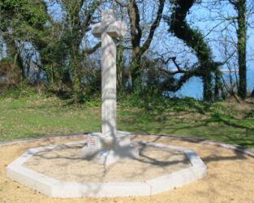
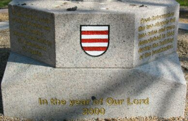
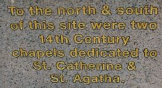
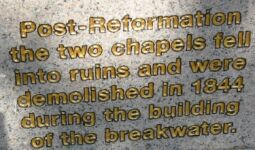
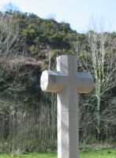
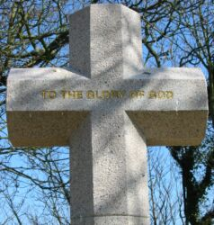

Millennium Stones and Crosses
Les Pièrres et les Crouaix du Millénaithe
St. Martin - St Martîn




To the north & south
of this site were two
14th Century
chapels dedicated to
St. Catherine &
St. Agatha
Post-Reformation
the two chapels fell
into ruins and were
demolished in 1844
during the building
of the breakwater


R'tou ès Statues | Back to Statues
R'tou à la page d'siez-mé | Back to home page